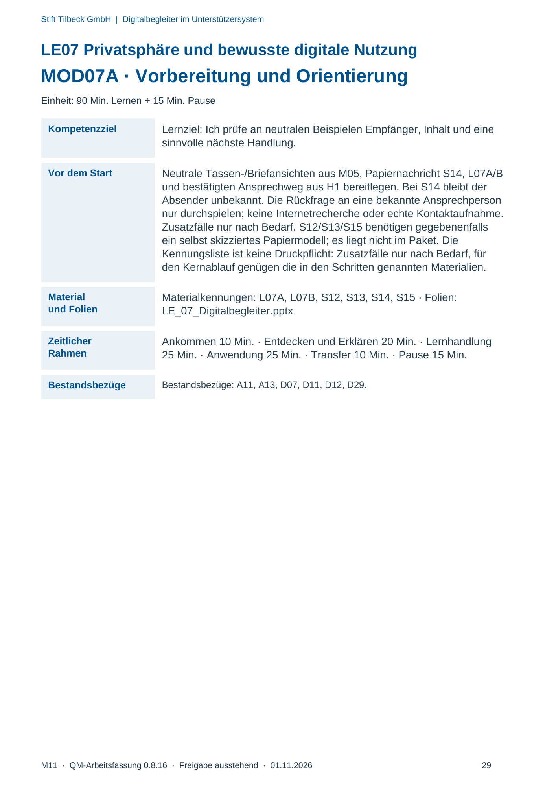
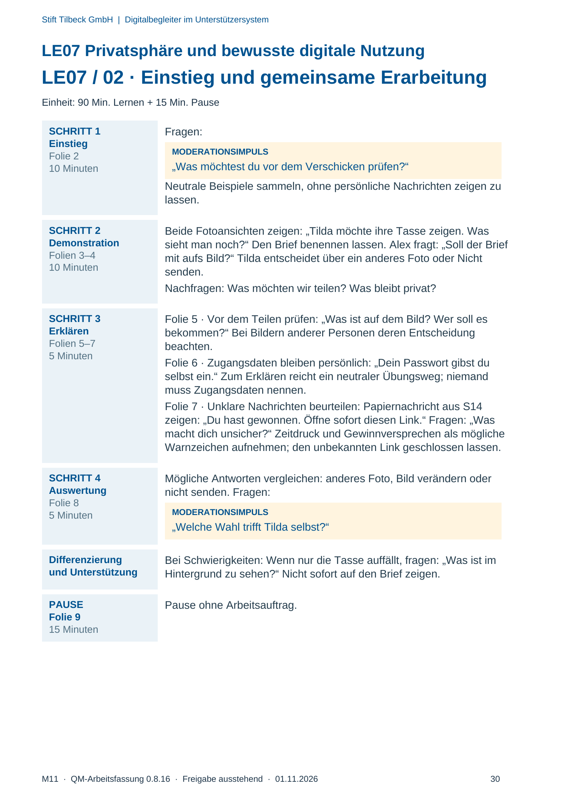
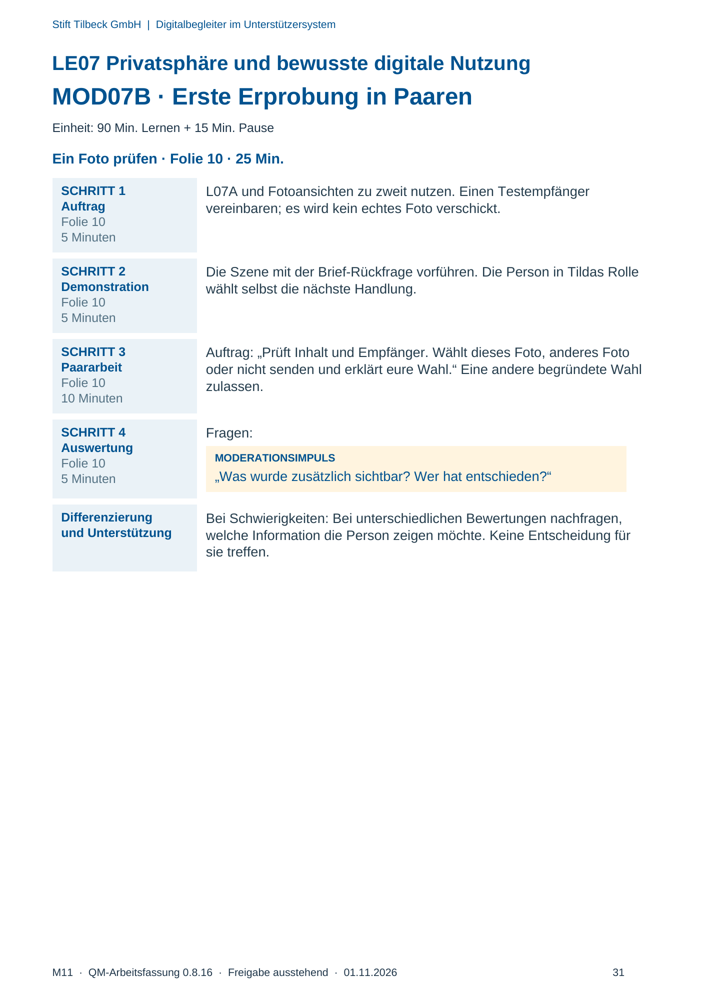
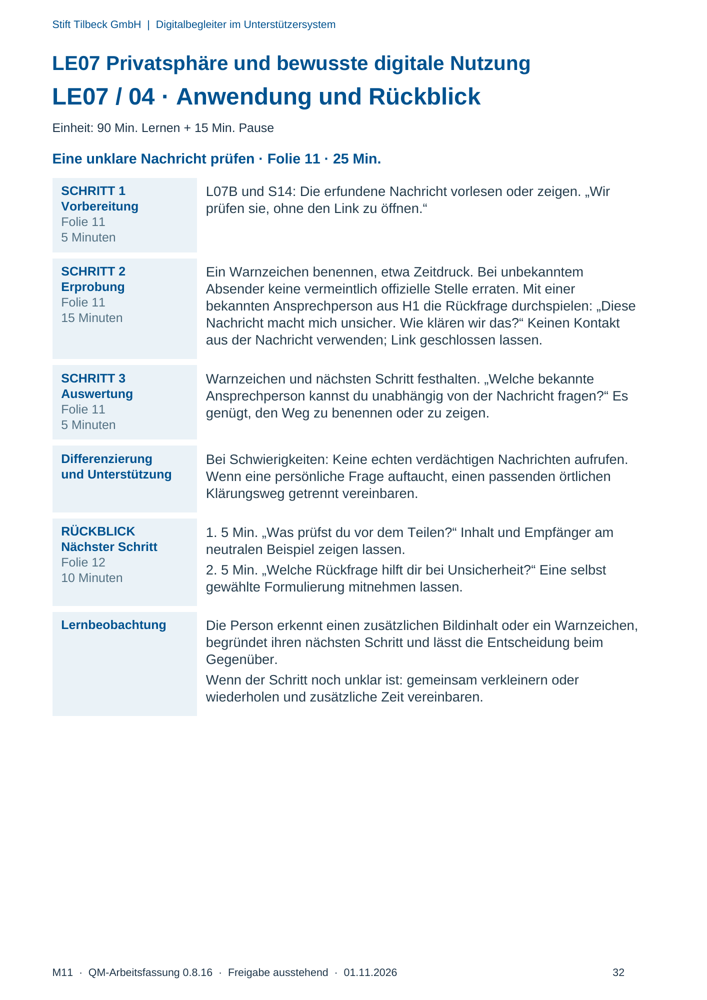

M11 · Originalseite 29, 30, 31, 32
Durchführungshilfe
Gezielte Original-Druckauswahl.
Fragen und Ankreuzfelder werden auf dem Ausdruck bearbeitet. Die Lesefassung speichert keine Antworten.
Lesefassung · Seite 29
Stift Tilbeck GmbH | Digitalbegleiter im Unterstützersystem
LE07 Privatsphäre und bewusste digitale Nutzung
MOD07A · Vorbereitung und Orientierung
Einheit: 90 Min. Lernen + 15 Min. Pause
Kompetenzziel Lernziel: Ich prüfe an neutralen Beispielen Empfänger, Inhalt und eine
sinnvolle nächste Handlung.
Vor dem Start Neutrale Tassen-/Briefansichten aus M05, Papiernachricht S14, L07A/B
und bestätigten Ansprechweg aus H1 bereitlegen. Bei S14 bleibt der
Absender unbekannt. Die Rückfrage an eine bekannte Ansprechperson
nur durchspielen; keine Internetrecherche oder echte Kontaktaufnahme.
Zusatzfälle nur nach Bedarf. S12/S13/S15 benötigen gegebenenfalls
ein selbst skizziertes Papiermodell; es liegt nicht im Paket. Die
Kennungsliste ist keine Druckpflicht: Zusatzfälle nur nach Bedarf, für
den Kernablauf genügen die in den Schritten genannten Materialien.
Material
und Folien
Materialkennungen: L07A, L07B, S12, S13, S14, S15 · Folien:
LE_07_Digitalbegleiter.pptx
Zeitlicher
Rahmen
Ankommen 10 Min. · Entdecken und Erklären 20 Min. · Lernhandlung
25 Min. · Anwendung 25 Min. · Transfer 10 Min. · Pause 15 Min.
Bestandsbezüge Bestandsbezüge: A11, A13, D07, D11, D12, D29.
Originalseite ansehen

Lesefassung · Seite 30
Stift Tilbeck GmbH | Digitalbegleiter im Unterstützersystem
LE07 Privatsphäre und bewusste digitale Nutzung
LE07 / 02 · Einstieg und gemeinsame Erarbeitung
Einheit: 90 Min. Lernen + 15 Min. Pause
SCHRITT 1
Einstieg
Folie 2
10 Minuten
Fragen:
MODERATIONSIMPULS
„Was möchtest du vor dem Verschicken prüfen?“
Neutrale Beispiele sammeln, ohne persönliche Nachrichten zeigen zu
lassen.
SCHRITT 2
Demonstration
Folien 3–4
10 Minuten
Beide Fotoansichten zeigen: „Tilda möchte ihre Tasse zeigen. Was
sieht man noch?“ Den Brief benennen lassen. Alex fragt: „Soll der Brief
mit aufs Bild?“ Tilda entscheidet über ein anderes Foto oder Nicht
senden.
Nachfragen: Was möchten wir teilen? Was bleibt privat?
SCHRITT 3
Erklären
Folien 5–7
5 Minuten
Folie 5 · Vor dem Teilen prüfen: „Was ist auf dem Bild? Wer soll es
bekommen?“ Bei Bildern anderer Personen deren Entscheidung
beachten.
Folie 6 · Zugangsdaten bleiben persönlich: „Dein Passwort gibst du
selbst ein.“ Zum Erklären reicht ein neutraler Übungsweg; niemand
muss Zugangsdaten nennen.
Folie 7 · Unklare Nachrichten beurteilen: Papiernachricht aus S14
zeigen: „Du hast gewonnen. Öffne sofort diesen Link.“ Fragen: „Was
macht dich unsicher?“ Zeitdruck und Gewinnversprechen als mögliche
Warnzeichen aufnehmen; den unbekannten Link geschlossen lassen.
SCHRITT 4
Auswertung
Folie 8
5 Minuten
Mögliche Antworten vergleichen: anderes Foto, Bild verändern oder
nicht senden. Fragen:
MODERATIONSIMPULS
„Welche Wahl trifft Tilda selbst?“
Differenzierung
und Unterstützung
Bei Schwierigkeiten: Wenn nur die Tasse auffällt, fragen: „Was ist im
Hintergrund zu sehen?“ Nicht sofort auf den Brief zeigen.
PAUSE
Folie 9
15 Minuten
Pause ohne Arbeitsauftrag.
Originalseite ansehen

Lesefassung · Seite 31
Stift Tilbeck GmbH | Digitalbegleiter im Unterstützersystem
LE07 Privatsphäre und bewusste digitale Nutzung
MOD07B · Erste Erprobung in Paaren
Einheit: 90 Min. Lernen + 15 Min. Pause
Ein Foto prüfen · Folie 10 · 25 Min.
SCHRITT 1
Auftrag
Folie 10
5 Minuten
L07A und Fotoansichten zu zweit nutzen. Einen Testempfänger
vereinbaren; es wird kein echtes Foto verschickt.
SCHRITT 2
Demonstration
Folie 10
5 Minuten
Die Szene mit der Brief-Rückfrage vorführen. Die Person in Tildas Rolle
wählt selbst die nächste Handlung.
SCHRITT 3
Paararbeit
Folie 10
10 Minuten
Auftrag: „Prüft Inhalt und Empfänger. Wählt dieses Foto, anderes Foto
oder nicht senden und erklärt eure Wahl.“ Eine andere begründete Wahl
zulassen.
SCHRITT 4
Auswertung
Folie 10
5 Minuten
Fragen:
MODERATIONSIMPULS
„Was wurde zusätzlich sichtbar? Wer hat entschieden?“
Differenzierung
und Unterstützung
Bei Schwierigkeiten: Bei unterschiedlichen Bewertungen nachfragen,
welche Information die Person zeigen möchte. Keine Entscheidung für
sie treffen.
Originalseite ansehen

Lesefassung · Seite 32
Stift Tilbeck GmbH | Digitalbegleiter im Unterstützersystem
LE07 Privatsphäre und bewusste digitale Nutzung
LE07 / 04 · Anwendung und Rückblick
Einheit: 90 Min. Lernen + 15 Min. Pause
Eine unklare Nachricht prüfen · Folie 11 · 25 Min.
SCHRITT 1
Vorbereitung
Folie 11
5 Minuten
L07B und S14: Die erfundene Nachricht vorlesen oder zeigen. „Wir
prüfen sie, ohne den Link zu öffnen.“
SCHRITT 2
Erprobung
Folie 11
15 Minuten
Ein Warnzeichen benennen, etwa Zeitdruck. Bei unbekanntem
Absender keine vermeintlich offizielle Stelle erraten. Mit einer
bekannten Ansprechperson aus H1 die Rückfrage durchspielen: „Diese
Nachricht macht mich unsicher. Wie klären wir das?“ Keinen Kontakt
aus der Nachricht verwenden; Link geschlossen lassen.
SCHRITT 3
Auswertung
Folie 11
5 Minuten
Warnzeichen und nächsten Schritt festhalten. „Welche bekannte
Ansprechperson kannst du unabhängig von der Nachricht fragen?“ Es
genügt, den Weg zu benennen oder zu zeigen.
Differenzierung
und Unterstützung
Bei Schwierigkeiten: Keine echten verdächtigen Nachrichten aufrufen.
Wenn eine persönliche Frage auftaucht, einen passenden örtlichen
Klärungsweg getrennt vereinbaren.
RÜCKBLICK
Nächster Schritt
Folie 12
10 Minuten
1. 5 Min. „Was prüfst du vor dem Teilen?“ Inhalt und Empfänger am
neutralen Beispiel zeigen lassen.
2. 5 Min. „Welche Rückfrage hilft dir bei Unsicherheit?“ Eine selbst
gewählte Formulierung mitnehmen lassen.
Lernbeobachtung Die Person erkennt einen zusätzlichen Bildinhalt oder ein Warnzeichen,
begründet ihren nächsten Schritt und lässt die Entscheidung beim
Gegenüber.
Wenn der Schritt noch unklar ist: gemeinsam verkleinern oder
wiederholen und zusätzliche Zeit vereinbaren.
Originalseite ansehen
